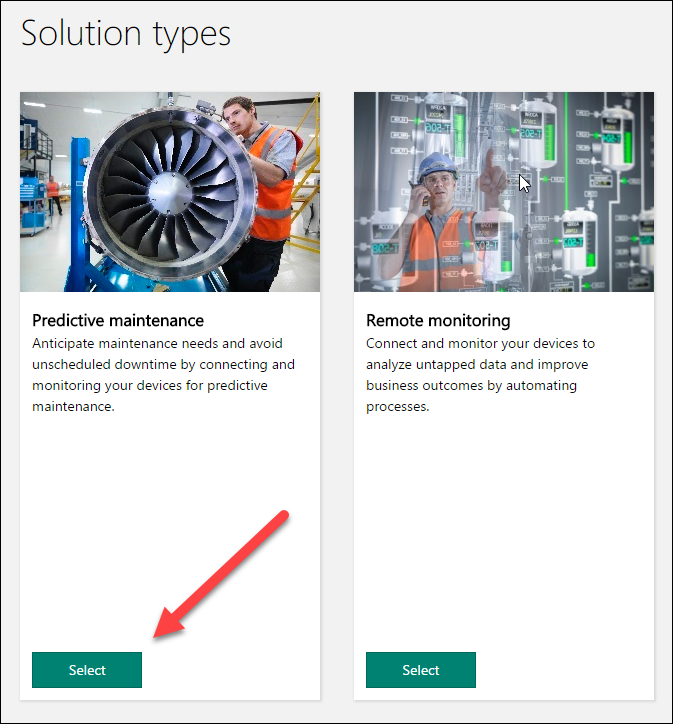
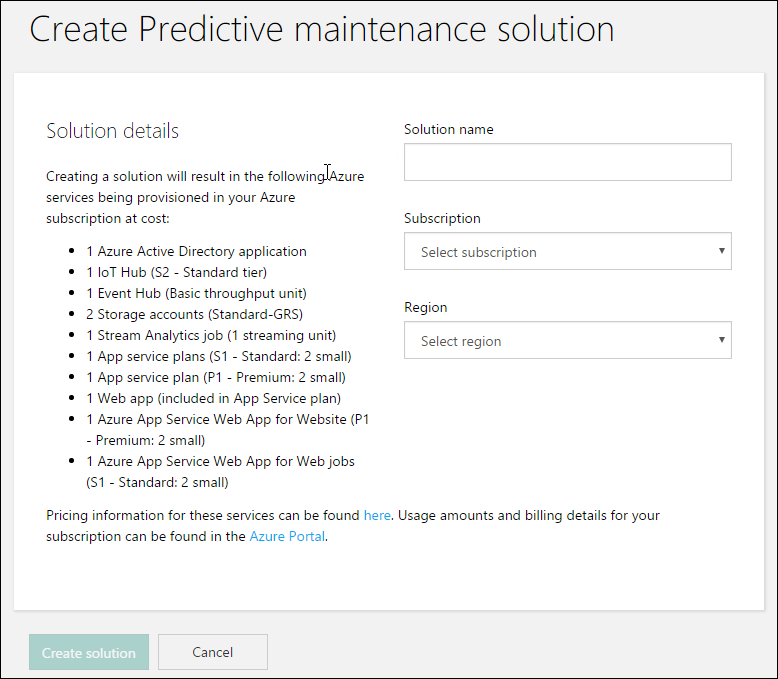
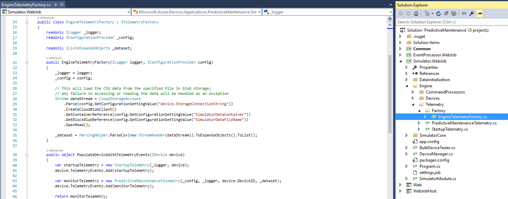
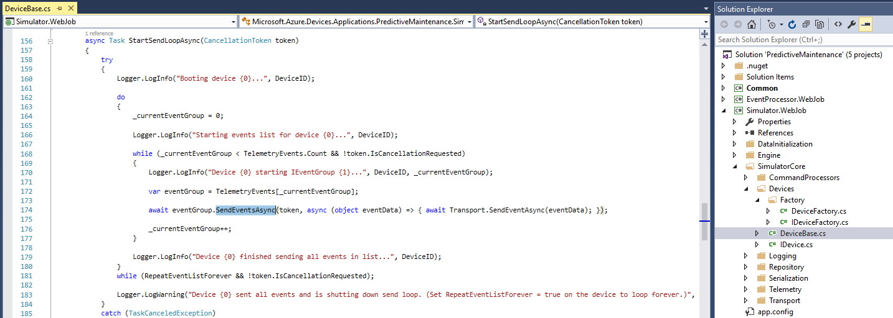
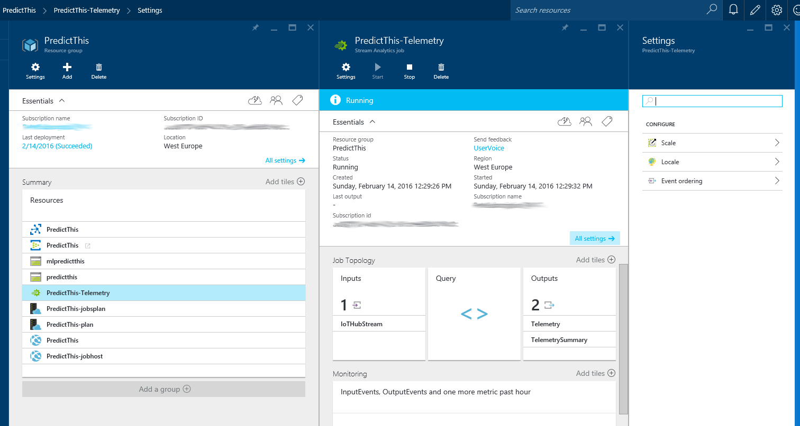
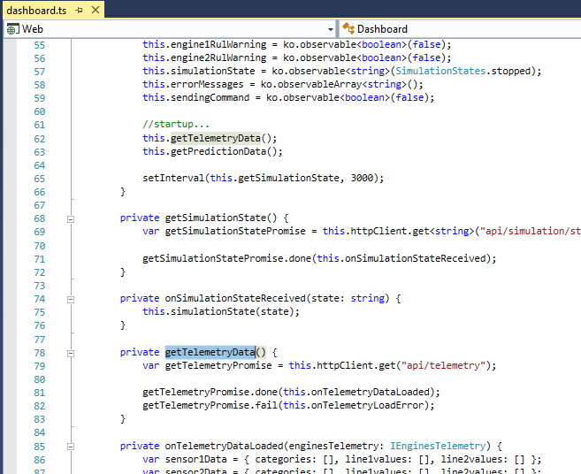
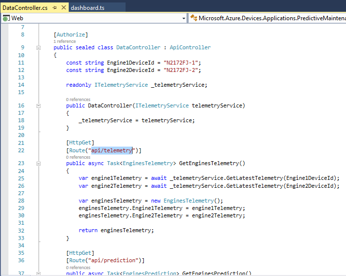
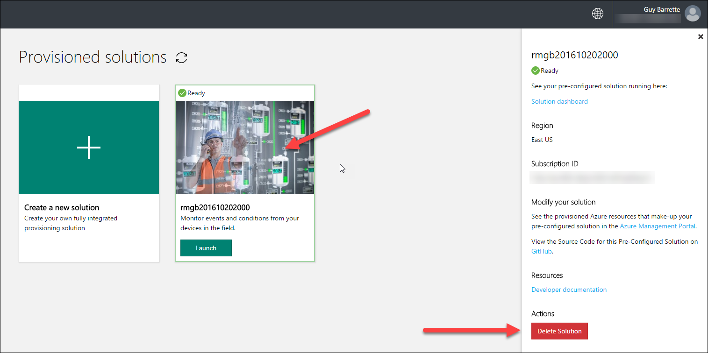

Duration: 5-10 minutes
The purpose of this demo is to show the parts of a large IoT Solution and introduce the Predictive Analytics solution.
An active Azure subscription. If you don’t have an account, you can create a free trial account in just a couple of minutes. For details, see http://azure.microsoft.com/pricing/free-trial/
You have two options to deploy the Predictive Maintenance solution:
Use the www.azureiotsuite.com website
Use a tested snapshot version that comes with this content and deploy it from the Command Prompt (Visual Studio 2015 is required). This version also uses less Azure resources.
Head to www.azureiotsuite.com
Select the Predictive Maintenance solution

Enter a solution name, select you Azure subscription and region.

Note that provisioning can take around 10 minutes.
Important: using this method, highly scalable versions of some of the Azure services are provisioned and will incur relatively high charges for the demo, so be sure to teardown as soon as possible. Please take a look at this documentation article on how to scale down these services: https://github.com/Azure/azure-iot-remote-monitoring/blob/master/Docs/configure-preconfigured-demo.md
The snapshot version of the Remote Monitoring solution needs to be deployed prior to the presentation. This version is the same as the one provisioned using www.azureiotsuite.com except that the PowerShell script has been modified to use an IoT Hub S1 tier and only one instance of both App services. Note that this can take around 10 minutes to complete.
Locate the Demo 3.1 folder under the Solutions folder for this session
Start the “Developers Command Prompt for Visual Studio” as an Administrator
CD to the Demo 3.1 folder
Type: build.cmd cloud release deploymentname
(where deploymentname is a globally unique name you choose – keep it to an alphanumeric name starting with alpha with no spaces/symbols perhaps ending in todays date as yyyymmdd)
The IoT Suite predictive maintenance preconfigured solution is an end-to-end solution for a business scenario that predicts the point when failure is likely to occur.
The demo goal is to tour the solution and explain how it works on a high level. Don’t try to go too deep as in the next demos, you’ll go deeper into code (for the less complex Remote Monitoring solution). However, it is important to familiarize yourself with the solution architecture to make sure you’re properly prepared if some questions arise from the attendees. So, for you, this demo is more about understanding the various services used by the solution then trying to understand the code and the inner workings.
The following diagram outlines the logical components of the preconfigured solution:
The blue items are Azure services that are provisioned in the location you select when you provision the preconfigured solution. You can provision the preconfigured solution in either the East US, North Europe, or East Asia region.
Some resources are not available in the regions where you provision the preconfigured solution. The orange items in the diagram represent the Azure services provisioned in the closest available region (South Central US, Europe West, or SouthEast Asia) given the selected region.
The green item is a simulated device that represents an aircraft engine. You can learn more about these simulated devices in the following section.
The gray items represent components that implement device administration capabilities. The current release of the predictive maintenance preconfigured solution does not provision these resources.
In the preconfigured solution, a simulated device represents an aircraft engine. The solution is provisioned with two engines that map to a single aircraft. Each engine emits four types of telemetry: Sensor 9, Sensor 11, Sensor 14, and Sensor 15 provide the data necessary for the Machine Learning model to calculate the Remaining Useful Life (RUL) for the engine. Each simulated device sends the following telemetry messages to IoT Hub:
Cycle count. A cycle represents a completed flight of variable length between 2-10 hours in which telemetry data is captured every half hour during the flight.
Telemetry. There are four sensors that represent engine attributes. The sensors are generically labeled Sensor 9, Sensor 11, Sensor 14, and Sensor 15. These 4 sensors represent telemetry sufficient to get useful results from the Machine Learning model for RUL. This model is created from a public data set that includes real engine sensor data. For more information on how the model was created from the original data set, see the Cortana Intelligence Gallery Predictive Maintenance Template.
The simulated devices can handle the following commands sent from an IoT hub:
| Command | Description |
|---|---|
| StartTelemetry | Starts the device sending telemetry |
| StopTelemetry | Stops the device sending telemetry |
When you provision the preconfigured solution, you receive an email with a link to the Machine Learning workspace. You can also navigate to the Machine Learning workspace from the azureiotsuite.com page for your provisioned solution when it’s in the Ready state.

In the solution portal, you can see that the sample is provisioned with four simulated devices to represent two aircraft with two engines per aircraft, each with four sensors. When you first navigate to the solution portal, the simulation is stopped.

Click Start simulation to begin the simulation in which you see the sensor history, RUL, Cycles, and RUL history populate the dashboard.

When RUL is less than 160 (an arbitrary threshold chosen for demonstration purposes), the solution portal displays a warning symbol next to the RUL display and highlights the aircraft engine in yellow. Notice how the RUL values have a general downward trend overall, but tend to bounce up and down. This behavior results from the varying cycle lengths and the model accuracy.
The full simulation takes around 35 minutes to complete 148 cycles. The 160 RUL threshold is met for the first time at around 5 minutes and both engines hit the threshold at around 8 minutes. The simulation runs through the complete dataset for 148 cycles and settles on final RUL and cycle values.
Start the simulation as soon as you show the dashboard and move along showing the services and code that the solution uses. This will give enough time for the first threshold cycle to complete.
You can stop the simulation at any point, but clicking Start Simulation replays the simulation from the start of the dataset.
In the Azure portal, navigate to the resource group with the solution name you chose to view your provisioned resources.

The simulated device is implemented as a Web Job. The Web Job takes its data from a csv file. Then when the simulation is started, it loops through the data, sending the data over a period of time.


Two queries within one Stream Analytics job watch the data coming in from the IoT Hub. One is just to store the data in Blob storage. The Dashboard also feeds from this data. The second stream analytics job aggregates the sensor data for a given cycle (cycle in the solution is synonymous with an airplane flight of variable length). The aggregations are passed to the pre-provisioned machine learning model to calculate remaining useful life per cycle.

This component is the public Single Page Application, presented in this demo. It uses TypeScript to populate the data bound elements of the index page.

The "httpClient.get" shown above targets the api method below:

Head to www.azureiotsuite.com, select your provisioned solution and click on the Delete Solution button. Note that this can take around 10 minutes.
